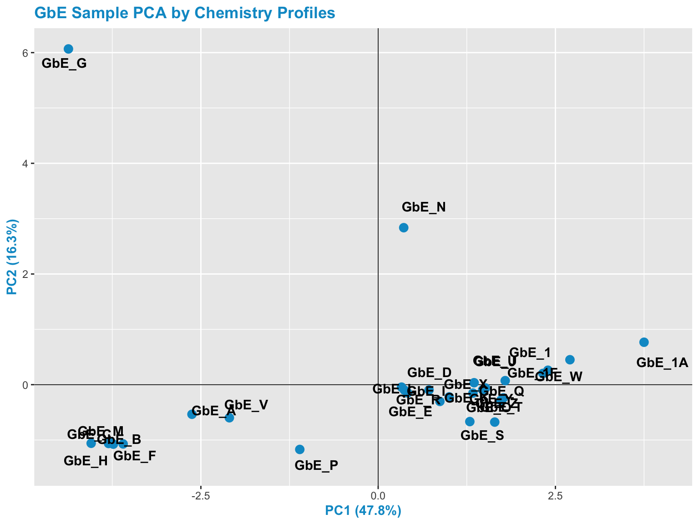

7.7 Chemistry-based Sufficient Similarity Analysis
The first method employed in this Sufficient Similarity analysis is Principal Component Analysis (PCA). PCA is a very common dimensionality reduction technique, as detailed in the ‘Machine Learning and Predictive Modeling’ training module.
In summary, PCA finds dimensions (eigenvectors) in the higher dimensional original data that capture as much of the variation as possible, which you can then plot. This allows you to project higher dimensional data, in this case 12 dimensions (representing 12 measured chemicals), in fewer dimensions (we’ll use 2). These dimensions, or components, capture the “essence” of the original dataset.
Before we can run PCA on this chemistry dataset, we first need to scale the data across samples. We do this here for the chemistry dataset, because we specifically want to evaluate and potentially highlight/emphasize chemicals that may be at relatively low abundance. These low-abundance chemicals may actually be contaminants that drive toxicological effects.
7.7.0.2 And make a scaled version to carry forward in this analysis
7.7.0.3 Here, we move the sample column the row names then scale and center data
7.7.0.4 Let’s now compare one of the rows of data (here, sample GbE_E) to see what scaling did:
## # A tibble: 1 x 13
## Sample Bilobalide Ginkgolide_A Ginkgolide_B Ginkgolide_C Ginkgolide_J Rutin
## <chr> <dbl> <dbl> <dbl> <dbl> <dbl> <dbl>
## 1 GbE_E 1.5 2.13 1.46 2.6 1.21 1.21
## # … with 6 more variables: Quercetin <dbl>, Kaempferol <dbl>,
## # Isorhamnetin <dbl>, Ginkgolic_Acid_C15 <dbl>, Ginkgolic_Acid_C17 <dbl>,
## # Ginkgotoxin <dbl>## Bilobalide Ginkgolide_A Ginkgolide_B Ginkgolide_C Ginkgolide_J Rutin
## GbE_E -0.4996768 0.02749315 0.2559249 1.36305 0.3842836 0.5758008
## Quercetin Kaempferol Isorhamnetin Ginkgolic_Acid_C15 Ginkgolic_Acid_C17
## GbE_E 0.2059607 -0.2420023 -0.61695 -0.2737699 -0.2317415
## Ginkgotoxin
## GbE_E -0.8114437You can see that scaling made the concentrations distributed across each chemical center around 0.
7.7.0.6 Looking at the scree plot, we see the first two principal components capture most of the variance in the data (~64%)

Here are the resulting PCA scores for each sample, for each principal component (shown here as components 1-12)
## Comp.1 Comp.2 Comp.3 Comp.4 Comp.5 Comp.6
## GbE_A -2.6256689 -0.53470486 0.38196672 1.5147505 1.34638144 -0.24020735
## GbE_B -3.7343187 -1.07490206 0.07766108 0.2529618 -0.01731847 -0.02446797
## GbE_C -3.8019563 -1.06232680 0.08335445 0.2588084 -0.01912736 -0.03423438
## GbE_D 0.7175782 -0.09566345 0.90082998 -0.7762090 -0.40507924 -0.78361086
## GbE_E 0.4157644 -0.14794948 1.16402759 -0.4856176 -0.15497152 -0.64206760
## GbE_F -3.7621819 -1.04784203 0.08687721 0.2503188 -0.02195005 -0.04030373
## Comp.7 Comp.8 Comp.9 Comp.10 Comp.11 Comp.12
## GbE_A -0.8890488 0.8145597 0.15021776 -0.54318277 -0.32353295 0.049538024
## GbE_B 0.3988596 -0.3227102 -0.10344907 -0.12911495 0.11127631 0.008306532
## GbE_C 0.3817061 -0.2788579 -0.13057528 -0.02613584 0.08148776 0.011485316
## GbE_D -1.1916851 -0.4306198 0.08460588 0.26115540 0.01065657 -0.053819603
## GbE_E -1.1412900 -0.5632547 0.12309347 -0.02872126 0.24882196 0.047691048
## GbE_F 0.3948245 -0.3105324 -0.10539998 -0.11015645 0.10607314 0.012066512And the resulting loading factors of each chemical’s contribution towards each principal component. Results are arranged by a chemical’s contribution to PC1, the component accounting for most of the variation in the data.
## Comp.1 Comp.2 Comp.3 Comp.4 Comp.5
## Bilobalide 0.3260729 0.085117226 0.24541927 0.36968834 0.03575030
## Ginkgolide_A 0.3732546 0.184101347 0.08586157 0.02446723 -0.03299212
## Ginkgolide_B 0.3611463 0.201280307 0.05996588 -0.19928568 -0.05965128
## Ginkgolide_C 0.3616497 0.001365838 0.12157943 -0.24092774 -0.10470516
## Ginkgolide_J 0.2995761 0.178689209 0.09144978 0.35348565 0.47372240
## Rutin 0.1763429 0.012553984 0.59496115 -0.47712128 0.08063637
## Comp.6 Comp.7 Comp.8 Comp.9 Comp.10
## Bilobalide 0.004975969 0.55079870 0.35062913 0.23584371 0.25226337
## Ginkgolide_A -0.247529927 0.30284388 -0.30206946 -0.01601813 0.20620248
## Ginkgolide_B -0.068401213 -0.00687696 0.09497565 -0.83752355 0.02062813
## Ginkgolide_C -0.185456111 -0.45474675 -0.34421625 0.32067335 0.45797955
## Ginkgolide_J -0.062170758 -0.55785820 0.36066655 0.03820900 -0.14858754
## Rutin 0.517141873 0.05060803 0.03111005 0.15083257 -0.27469825
## Comp.11 Comp.12
## Bilobalide 0.29295985 0.23837797
## Ginkgolide_A -0.60099943 -0.41172878
## Ginkgolide_B 0.24851189 0.06938891
## Ginkgolide_C 0.28752202 0.17463609
## Ginkgolide_J -0.22581449 -0.03024110
## Rutin -0.09884752 -0.04092322loadings <- as.data.frame.matrix(chem_pca$loadings) # pulling the chemical-specific loadings into a separate matrix
loadings %>% arrange(desc(Comp.1)) # sorting the loadings from highest to lowest for component #1## Comp.1 Comp.2 Comp.3 Comp.4 Comp.5
## Quercetin 0.3801459 -0.001945021 -0.19193647 0.04697879 0.007656212
## Ginkgolide_A 0.3732546 0.184101347 0.08586157 0.02446723 -0.032992122
## Ginkgolide_C 0.3616497 0.001365838 0.12157943 -0.24092774 -0.104705164
## Ginkgolide_B 0.3611463 0.201280307 0.05996588 -0.19928568 -0.059651275
## Bilobalide 0.3260729 0.085117226 0.24541927 0.36968834 0.035750299
## Kaempferol 0.3001354 -0.085004317 -0.29667523 -0.15611039 -0.655825688
## Ginkgolide_J 0.2995761 0.178689209 0.09144978 0.35348565 0.473722400
## Isorhamnetin 0.2740348 -0.075119327 -0.29665890 0.39008587 -0.060880190
## Rutin 0.1763429 0.012553984 0.59496115 -0.47712128 0.080636368
## Ginkgotoxin 0.1675373 -0.034318656 -0.56232119 -0.47935782 0.551341021
## Ginkgolic_Acid_C15 -0.1201265 0.667543042 -0.11607308 -0.05802100 -0.085384063
## Ginkgolic_Acid_C17 -0.1418140 0.653142232 -0.09559022 -0.02189315 -0.084006824
## Comp.6 Comp.7 Comp.8 Comp.9 Comp.10
## Quercetin -0.249799236 0.13263831 -0.30855302 0.18612332 -0.72929122
## Ginkgolide_A -0.247529927 0.30284388 -0.30206946 -0.01601813 0.20620248
## Ginkgolide_C -0.185456111 -0.45474675 -0.34421625 0.32067335 0.45797955
## Ginkgolide_B -0.068401213 -0.00687696 0.09497565 -0.83752355 0.02062813
## Bilobalide 0.004975969 0.55079870 0.35062913 0.23584371 0.25226337
## Kaempferol 0.050018874 -0.12464461 0.51491286 0.16055155 -0.07828551
## Ginkgolide_J -0.062170758 -0.55785820 0.36066655 0.03820900 -0.14858754
## Isorhamnetin 0.730543567 -0.06658953 -0.34052044 -0.10456587 0.10158173
## Rutin 0.517141873 0.05060803 0.03111005 0.15083257 -0.27469825
## Ginkgotoxin 0.092918281 0.20744490 0.16087302 0.11145659 0.17463719
## Ginkgolic_Acid_C15 0.057775937 0.03440329 -0.13417826 0.06575084 -0.07780733
## Ginkgolic_Acid_C17 0.133278823 -0.05017155 0.08415192 0.16593739 0.03564092
## Comp.11 Comp.12
## Quercetin 0.273123642 0.008854815
## Ginkgolide_A -0.600999427 -0.411728782
## Ginkgolide_C 0.287522018 0.174636086
## Ginkgolide_B 0.248511890 0.069388910
## Bilobalide 0.292959851 0.238377968
## Kaempferol -0.211380567 -0.020939233
## Ginkgolide_J -0.225814490 -0.030241100
## Isorhamnetin 0.002690835 -0.006305513
## Rutin -0.098847524 -0.040923217
## Ginkgotoxin -0.005807642 0.016904160
## Ginkgolic_Acid_C15 -0.285797465 0.633437667
## Ginkgolic_Acid_C17 0.383124914 -0.577639931These resulting loading factors allow us to identify which constituents (of the 12 total) contribute to the principal components explaining data variabilities. For instance, we can see here that:
Quercetin is listed at the top, with the largest loading value for principal component 1. Thus, Quercetin represents the constituents that contributes to the overall variability in the dataset to the greatest extent.
The next three chemicals are all Ginkgolide constituents, followed by Bilobalide and Kaempferol, and so forth.
If we look at principal component 2, we can now see a different set of chemicals contributing to the variability captured in this component:
## Comp.1 Comp.2 Comp.3 Comp.4 Comp.5
## Ginkgolic_Acid_C15 -0.1201265 0.667543042 -0.11607308 -0.05802100 -0.085384063
## Ginkgolic_Acid_C17 -0.1418140 0.653142232 -0.09559022 -0.02189315 -0.084006824
## Ginkgolide_B 0.3611463 0.201280307 0.05996588 -0.19928568 -0.059651275
## Ginkgolide_A 0.3732546 0.184101347 0.08586157 0.02446723 -0.032992122
## Ginkgolide_J 0.2995761 0.178689209 0.09144978 0.35348565 0.473722400
## Bilobalide 0.3260729 0.085117226 0.24541927 0.36968834 0.035750299
## Rutin 0.1763429 0.012553984 0.59496115 -0.47712128 0.080636368
## Ginkgolide_C 0.3616497 0.001365838 0.12157943 -0.24092774 -0.104705164
## Quercetin 0.3801459 -0.001945021 -0.19193647 0.04697879 0.007656212
## Ginkgotoxin 0.1675373 -0.034318656 -0.56232119 -0.47935782 0.551341021
## Isorhamnetin 0.2740348 -0.075119327 -0.29665890 0.39008587 -0.060880190
## Kaempferol 0.3001354 -0.085004317 -0.29667523 -0.15611039 -0.655825688
## Comp.6 Comp.7 Comp.8 Comp.9 Comp.10
## Ginkgolic_Acid_C15 0.057775937 0.03440329 -0.13417826 0.06575084 -0.07780733
## Ginkgolic_Acid_C17 0.133278823 -0.05017155 0.08415192 0.16593739 0.03564092
## Ginkgolide_B -0.068401213 -0.00687696 0.09497565 -0.83752355 0.02062813
## Ginkgolide_A -0.247529927 0.30284388 -0.30206946 -0.01601813 0.20620248
## Ginkgolide_J -0.062170758 -0.55785820 0.36066655 0.03820900 -0.14858754
## Bilobalide 0.004975969 0.55079870 0.35062913 0.23584371 0.25226337
## Rutin 0.517141873 0.05060803 0.03111005 0.15083257 -0.27469825
## Ginkgolide_C -0.185456111 -0.45474675 -0.34421625 0.32067335 0.45797955
## Quercetin -0.249799236 0.13263831 -0.30855302 0.18612332 -0.72929122
## Ginkgotoxin 0.092918281 0.20744490 0.16087302 0.11145659 0.17463719
## Isorhamnetin 0.730543567 -0.06658953 -0.34052044 -0.10456587 0.10158173
## Kaempferol 0.050018874 -0.12464461 0.51491286 0.16055155 -0.07828551
## Comp.11 Comp.12
## Ginkgolic_Acid_C15 -0.285797465 0.633437667
## Ginkgolic_Acid_C17 0.383124914 -0.577639931
## Ginkgolide_B 0.248511890 0.069388910
## Ginkgolide_A -0.600999427 -0.411728782
## Ginkgolide_J -0.225814490 -0.030241100
## Bilobalide 0.292959851 0.238377968
## Rutin -0.098847524 -0.040923217
## Ginkgolide_C 0.287522018 0.174636086
## Quercetin 0.273123642 0.008854815
## Ginkgotoxin -0.005807642 0.016904160
## Isorhamnetin 0.002690835 -0.006305513
## Kaempferol -0.211380567 -0.020939233With Ginkgolic Acids listed first here.
7.7.0.7 We can also visualize sample groupings based on these principal components 1 & 2
7.7.0.8 To view the PCA plot:
# First pull the percent variation captured by each component
pca_percent <- round(100*chem_pca$sdev^2/sum(chem_pca$sdev^2),1)
# Then make a dataframe for the PCA plot generation script using first three components
pca_df <- data.frame(PC1 = chem_pca$scores[,1], PC2 = chem_pca$scores[,2])
# Plot this dataframe
chem_pca_plt <- ggplot(pca_df, aes(PC1,PC2))+
geom_hline(yintercept = 0, size=0.3)+
geom_vline(xintercept = 0, size=0.3)+
geom_point(size=3, color="deepskyblue3") +
geom_text(aes(label=rownames(pca_df)), fontface="bold", position=position_jitter(width=0.4,height=0.4))+
labs(x=paste0("PC1 (",pca_percent[1],"%)"), y=paste0("PC2 (",pca_percent[2],"%)"))+
ggtitle("GbE Sample PCA by Chemistry Profiles")
# Changing the colors of the titles and axis text
chem_pca_plt <- chem_pca_plt + theme(plot.title=element_text(color="deepskyblue3", face="bold"),
axis.title.x=element_text(color="deepskyblue3", face="bold"),
axis.title.y=element_text(color="deepskyblue3", face="bold"))
# Viewing this resulting plot
chem_pca_plt